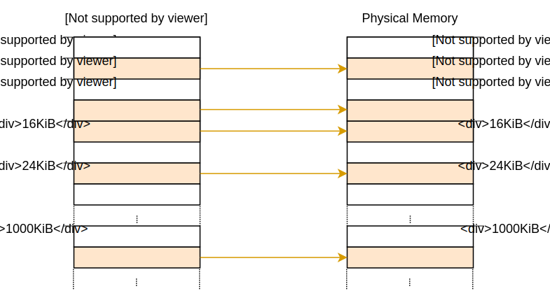
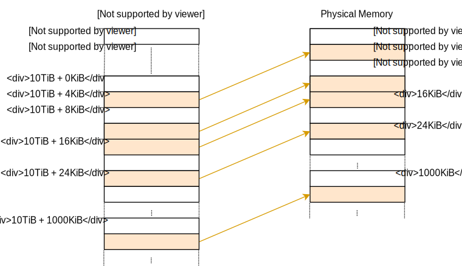
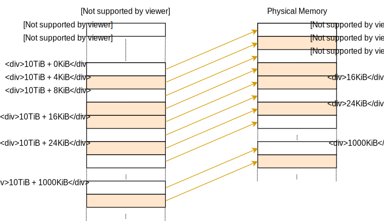

OS基础
- x86平台上，目前有两套固件标准，一个就是早期的BIOS、另外一个就是UEFI。
- 为了避免让每一个操作系统实现bootloader，所以有了bootloader标准Multiboot，这个标准定义了bootloader和OS交互的接口，其参考实现就是grub。
- 通过内存映射的方式访问，VGA (0xb8000)
QEMU -serial可以将串口输出重定向到另外一个地方，例如:-serial mon:stdio、-serial file:output-file.txt
Red Zone问题
Read Zone是System V ABI的一个优化，允许函数临时去使用栈帧下的128个字节，而不用去调整堆栈指针。 这个红色区域（red zone）就是一个优化。因为这个区域不会被信号或者中断侵占，函数可以在不移动栈指针的情况下使用它存取一些临时数据——于是两个移动rsp的指令就被节省下来了。 然而，标准只说了不会被信号和终端处理程序侵占，red zone还是会被接下来的函数调用使用的，这也是为什么大多数情况下都是叶子函数（不会再调用别的函数）使用这种优化。下面我举一个例子：

1 2 3 4 5 6 7 8 9 10 11 | |
对应的汇编如下:
1 2 3 4 5 6 7 8 9 10 11 12 13 14 15 16 17 18 19 20 21 22 23 24 25 26 27 28 | |
可以看到test1移动了栈顶指针来获取栈帧空间，即sub $xxx, %rsp + leaveq的组合。但是test2并没有移动栈顶指针，
而是直接使用ebp/esp（此时它们两个相等，由于是叶子也不用考虑内存对齐的问题）存放要使用的数据。
这个优化对于异常和硬件中断则会产生巨大问题，一般内部都会关掉这个优化。
 * https://os.phil-opp.com/red-zone/
* https://os.phil-opp.com/red-zone/
虚拟地址映射
在开启分页的情况下，内核如何直接访问物理地址，因此我们需要有一套机制将虚拟地址映射到对应的物理地址上，所以就有了一些技术方案。
- Identity Mapping
虚拟地址和物理地址一一映射，带来的问题就是会导致内存碎片(外部)，和分段机制的缺点是一样的，导致在需要一片连续内存的时候无法被满足。 而且超过frame范围的虚拟地址空间没有办法被映射。

- Map at a Fixed Offset
offset+虚拟地址空间地址来一一映射到frame，这样可以避免Identity Mapping因为超过frame范围的虚拟地址没有办法进行映射的问题，但是缺点就是 每次创建一个页表就需要创建这样的一个映射关系。而且它不允许访问其他地址空间的页表，这在创建新进程时很有用。

- Map the Complete Physical Memory
在Identify Maaping的基础上添加offset将虚拟地址映射到全部物理内存中，这个方法可以使得内核可以访问任意的物理内存。但是需要分配很多页表 无论是已经映射的虚拟地址还是没有映射的。这些页表会占用比较多的内存。不过我们可以通过huge page的方式来减少需要存储的页表大小。

- Temporary Mapping

- Recursive Page Tables

SIMD和OS
SIMD(Single Instruction Multiple Data)，单条指令可以操作多个字节的数据。目前x86支持三种SIMD的标准:
- MMX Multi Media Extension ，这个标准定义了8个64位的寄存器，分别是mm0、mm1、mm2....mm7
- SSE Streaming SIMD Extensions，添加了十六个新的寄存器，分别是xmm0...xmm15，每一个寄存器都是128位
- AVX Advanced Vector Extensions，新增了16个256位的寄存器 ymm0....ymm15
SIMD指令虽然可以提高性能，但是对于OS来说会导致上下文切换的开销变大，每一次上下文切换或者硬件中断都需要进行上下文的保存和恢复 因为使用了SIMD指令会导致每次需要保存的内容更多，带来性能的上的损耗。所以内核开发会关闭SIMD。但是目前x86_64架构一般都会使用 SIMDl来实现浮点数的操作，如果关闭SIMD会导致错误。幸运的是LLVM给我们提供了soft-float能力，可以通过软件函数来模拟所有的浮点数操作。
Preserved and Sscratch Registers
- preserved registers
这类寄存器在跨函数调用的时候必须不能被改变，因此被调用者需要一开始就保存这些寄存器，然后在调用结束的时候进行恢复
rbp, rbx, rsp, r12, r13, r14, r15
callee-saved 被调用者保存
- scratch registers
这类寄存器属于临时寄存器，被调用者在使用上是没有限制的，调用者如果向保持这些寄存器的值不变就需要保存这些寄存器。 所以这类寄存器被称为调用者保存
rax, rcx, rdx, rsi, rdi, r8, r9, r10, r11
caller-saved 调用者保存
Interrupt Calling Convention and Interrupt Stack Frame
- Interrupt Calling Convention
中断调用和函数调用很类似，都有自己的调用规范，因为异常可以发生在任何地方，因此我们没办法提前保存需要的寄存器，因此 中断调用的时候需要保存所有的寄存器。中断调用结束后恢复所有保存的寄存器。为了效率，并不会保存所有的寄存器，而这是保存 被函数覆盖的寄存器。
-
Interrupt Stack Frame
-
Aligning the stack pointer
- Switching stacks
- Pushing the old stack pointer
- ushing and updating the RFLAGS register
- Pushing the instruction pointer
- Pushing an error code
- Invoking the interrupt handler
VGA Buffer
IST and TSS
The Interrupt Stack Table (IST) is part of an old legacy structure called Task State Segment (TSS). The TSS used to hold various information (e.g. processor register state) about a task in 32-bit mode and was for example used for hardware context switching. However, hardware context switching is no longer supported in 64-bit mode and the format of the TSS changed completely.
On x86_64, the TSS no longer holds any task specific information at all. Instead, it holds two stack tables (the IST is one of them). The only common field between the 32-bit and 64-bit TSS is the pointer to the I/O port permissions bitmap.
The Privilege Stack Table is used by the CPU when the privilege level changes. For example, if an exception occurs while the CPU is in user mode (privilege level 3), the CPU normally switches to kernel mode (privilege level 0) before invoking the exception handler. In that case, the CPU would switch to the 0th stack in the Privilege Stack Table (since 0 is the target privilege level). We don't have any user mode programs yet, so we ignore this table for now.
The Interrupt Descriptor Table
In order to catch and handle exceptions, we have to set up a so-called Interrupt Descriptor Table (IDT). In this table we can specify a handler function for each CPU exception. The hardware uses this table directly,
The Global Descriptor Table
The Global Descriptor Table (GDT) is a relict that was used for memory segmentation before paging became the de facto standard. It is still needed in 64-bit mode for various things such as kernel/user mode configuration or TSS loading.
The GDT is a structure that contains the segments of the program. It was used on older architectures to isolate programs from each other, before paging became the standard. For more information about segmentation check out the equally named chapter of the free “Three Easy Pieces” book. While segmentation is no longer supported in 64-bit mode, the GDT still exists. It is mostly used for two things: Switching between kernel space and user space, and loading a TSS structure.
OS基础
最初的OS只能运行在16位的8088处理器上，只能访问到1MB的地址空间从0x00000000 ~ 0x000FFFFF，前640KB被称为低内存区，是OS可以直接使用的内存。 剩下的384KB从0x000A0000 ~ 0x000FFFFF则是保留的用于访问硬件的。其中BIOS占用64KB从0x000F0000 ~ 0X000FFFF、还有VGA占用0X000A0000 ~ 0x000C0000 此后Intel突破1MB内存限制后，为了向后兼容仍然保持这样的内存布局，这样就使得内存中存在一个hole，0x000A0000~0x00100000。内存则被分成了两个部分，第一个部分就是从0x00000000到 0x000A0000这640KB被称为低内存区，另外一个部分就是从0x00100000开始，被称为extended memory。此外BIOS通过会保留32位的物理地址空间的顶部内存空间，用于给32位的PCI设备使用。
启动后，第一条指定的位置是0x000ffff0，也就是顶部的16个字节的位置(为什么是这里)，第一条指令是一个ljmp的指令，跳转到0x000fe05b的位置，也是属于顶部的64KB的范围内，这个位置是固定的 也就是说，BIOS真正开始的地方就是0xfe05b处。
BIOS执行了一堆自检操作后，找到启动设备，然后载入启动设备的前512字节到0x7c00处，然后开始执行，这个时候控制权就转交给bootloader了，bootload主要做两件事:
- 实模式到32位保护模式的切换
- 从磁盘读取内核
如何从实模式切换到保护模式
- 打开A20地址线后
- 加载gdt
- CR0寄存器的PE位置设置为1
1 2 3 4 5 6 7 8 9 10 11 12 13 14 15 16 17 18 19 20 21 22 23 24 | |
Bootloader如何知道内核大小，读取指定的扇区把内核加载到对应的地方?
读取ELF头部信息，通过ELF头知道这个程序包含多少字节大小的内容，ELF头也指定了入口函数的地址，载入地址、链接地址等信息。
1 2 3 4 5 6 7 8 9 10 11 12 13 14 15 16 17 18 19 20 | |
ELF有一个固定的4字节的header，还有变长的program header。
1 2 3 4 5 6 7 8 9 10 11 12 13 14 15 16 17 18 19 20 21 22 23 24 25 26 27 28 | |
载入内核后，内核开始进行一系列的初始化，最重要的就是开启虚拟地址。在此之前内核一直运行在物理地址下，开启虚拟地址需要开启分页，相关代码如下:
1 2 3 4 5 6 7 8 9 10 11 12 13 14 15 16 17 | |
编程范式
命令式编程(Imperative)、声明式编程(Declarative)、函数式编程(Functional)
命令式编程: 一步一步告诉计算机做做什么、再做什么 声明式编程: 告诉计算机应该做什么，但是不指定具体要怎么做 函数式编程: 和声明式编程类似，但是他式通过一个个函数串连起来的。
如何获取调用链?
网络基础
- ARP和GARP
ARP协议工作在二层，用于获取IP地址对应的mac地址，报文的格式为who has [IP_B], tell [IP_A]，包含了要查询的IP地址，以及自己的IP地址和Mac地址信息
但是如果要查询的地址就是自己的地址，这个时候称为是GARP(Gratuitous ARP)，也就是免费的ARP，这种报文是允许的，有两个作用。
- 用来探测IP冲突的问题，如果真的有人响应这个报文，说明局域网中有和自己相同IP的机器存在
- 用来更新自己的Mac地址信息，当自己的Mac地址发生变化的时候，可以通过这种报文主动通知网络中的其他主机更新自己的ARP缓存
Debuger、Compiler、ELF
https://grafana.com/grafana/dashboards/7645
通过编译器的-g参数可以产生debug信息，最为重要的是debug_line、debug_info两类，前者用来提供行号信息，后者就是著名的DWARF提供调试信息。
debug_line的格式如下:
1 2 3 4 5 6 7 8 9 10 11 12 13 14 15 16 | |
包含了一些说明信息，已经地址和行号的对应关系:
- NS表示一个新的语句
- BB 表示一个基本的block
- ET 表示一个编译单元的结束
-
PE 是一个函数的开始